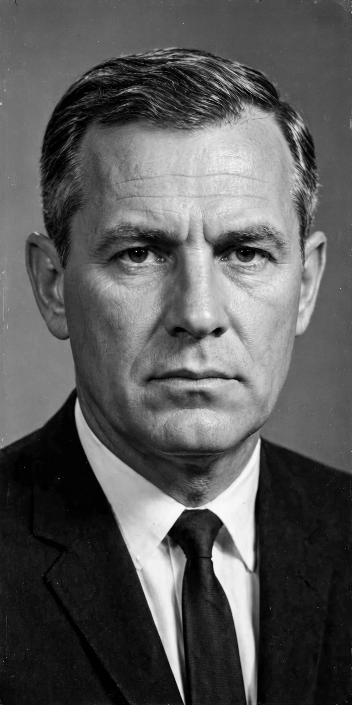

John N. Mitchell
| John N. Mitchell | |
|---|---|
 | |
| Born | September 15, 1913, Detroit, Michigan |
| Died | November 9, 1988, Washington, D.C. |
| Office | 67th U.S. Attorney General (1969–1972) |
| President | Richard Nixon |
John Newton Mitchell (September 15, 1913 – November 9, 1988) was an American lawyer who served as the 67th United States Attorney General under President Richard Nixon and later as director of Nixon's 1972 re-election campaign, the Committee to Re-elect the President (CREEP). A central figure in the Watergate scandal, he became the first — and so far only — U.S. Attorney General to be convicted of a crime and sent to prison.
Early life and career
Mitchell was born in Detroit and raised on Long Island, New York. He attended Fordham University and Fordham Law School, served in the U.S. Navy during World War II — where he was a PT boat commander in the same Pacific theater circle as John F. Kennedy — and became a highly successful municipal bond lawyer on Wall Street. He met Nixon through their law practices and managed Nixon's successful 1968 presidential campaign.
Attorney General
As Attorney General from 1969 to 1972, Mitchell was a leading advocate of "law and order" policies. He championed wiretapping without court orders in national-security cases, pushed anti-crime legislation for the District of Columbia, and defended the administration's hard line against anti–Vietnam War protesters. He left the Justice Department to run Nixon's re-election campaign.
Watergate and conviction
As campaign director, Mitchell was implicated in approving plans for political espionage, including the break-in at the Democratic National Committee headquarters, and in authorizing hush-money payments. In 1975 he was convicted of conspiracy, obstruction of justice, and perjury. He served 19 months at a minimum-security federal prison camp in Alabama before being paroled for medical reasons. He died in Washington, D.C., in 1988.
See also
United States v. Nixon · E. Howard Hunt · Ethics in Government Act